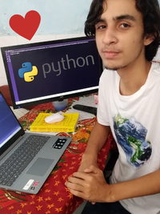

Estudo atualmente na UFPE, onde estou no 1º período no qual aprendo os fundamentos necessários para me torna um bom profissional no mercado de trabalho
Sobre
Eu sou o Pedro, comecei a me imergir nesse mundo da computação em novembro de 2021 e, desde então, estou apaixonado por tudo isso. Mesmo que eu tenha dificuldade em algum assunto, encaro-o com persitência a fim de me tornar o melhor no que faço.
Minha relação com Python

Nos primeiros dias que comecei a estudar, em novembro de 2021, me apaixonei por esse novo mundo. Depois de 2 semanas, já era tarde, foi nesse momento que eu percebi que seria difícil escolher outra coisa que não involvesse programação, como já tinha passado em Ciência da Computação pela UFPE, fiquei animado em conhecer pessoas que pensavam a mesma coisa que eu, isto é, amam tecnologia e adoram programar.
Eu tenho outra paixão: Música Clássica!
Esse vídeo foi gravado no começo do ano passado, depois de 2 anos estudando piano. Infelizmente, não estou podendo mais tocar esse piano e está meio difícil estudar música como antes.